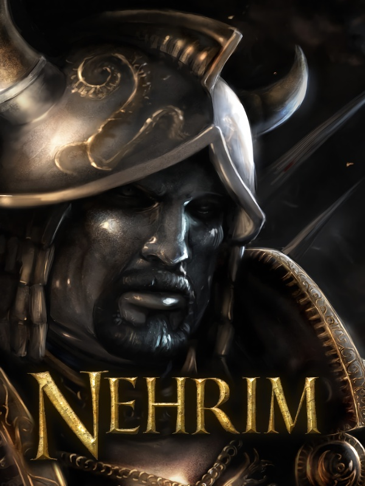

Nehrim: At Fate's Edge
Nehrim: At Fate's Edge
Details
|  | |
| Playtime | Not Played |
| Last Activity | Never |
| Added | 13/08/2020 |
| Modified | Never |
| Completion Status | Not Played |
| Source | Steam |
| Platform | PC |
| Release Date | 12/06/2020 |
| Community Score | 68 |
| Critic Score | |
| User Score | |
| Genre | Action Adventure RPG |
| Developer | SureAI |
| Publisher | SureAI |
| Feature | Achievements Nexus Mods Single Player |
| Links | Nexus Mods PCGamingWiki Community Hub Discussions Guides Achievements Store Page News |
Description
Switch between Oblivion and Nehrim
Nehrim needs to use the Oblivion directory to work on Steam.
The "Run Nehrim Oblivion" option will come up every time you run Nehrim via Steam, use it to switch between both games.
If you want to play Oblivion again: Launch Nehrim on Steam, a panel opens, here you can choose the "Run Nehrim Oblivion" option. The now launched switcher tool lets you easily switch back and forth between Oblivion and Nehrim.
About the Game
Nehrim: At Fate's Edge (the predecessor of Enderal: Forgotten Stories) is an total conversion for TES IV: Oblivion. Explore the eponymous land of Nehrim and its dense forests and deserts, delve into ancient crypts and labyrinthine caves, and experience an unconventional, gripping storyline that unfolds beyond known patterns of good and evil.
How extensive is the world space and how has it been created?
The land mass approximately equals the one of Oblivion. However, in Nehrim the landscape is entirely hand-built and thus has a lot more variety in it than those forests in Oblivion.
How long will it take me to beat the game?
As opposed to Oblivion, the Main Quest, including 35 single quests, is to the fore in Nehrim. Our Main Quest isn't just much more intense than Oblivion's, but also more extensive. You can beat Oblivion in about 10 hours. This most definitely will not be possible in Nehrim. Additionally, there will be about 30 side quests.
What is the most profound difference to Oblivion?
The skill system. In Nehrim, you level up by gaining experience points. You gain experience points by killing monsters and most of all for finishing quests. This is the best way to motivate the player to play them. At each level-up you get "learning points" you can trade for skill upgrades at a teacher - just as in the Gothic series.